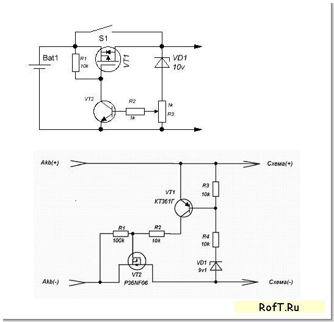
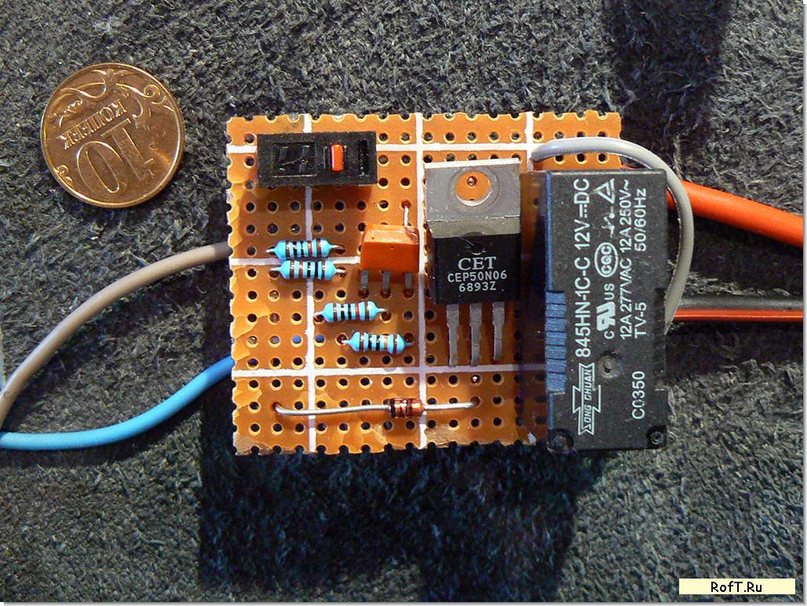

Простейшая, но отлично зарекомендовавшая себя защита от разряда аккумулятора ниже 10В делается за 10 минут.
Схемы (отличаются проводимостью транзисторов):


Обе схемы работают прекрасно. До 5-7А не требуется радиатор для полевика, но я себе сделал дополнительную коммутацию на реле 12В 12А, на всякий пожарный случай.
В первой схеме порог срабатывания регулируется подстроечным резистором, во второй - резисторами 10К в базе транзистора. При этих номиналах настройка на 10В ровно.
Для включения после срабатывания защиты надо или кратковременно нажать на кнопку - закоротить сток и исток полевика, или подать заряд на аккумулятор, что тоже выключит защиту. В общем для любых автономных систем, систем резервного и аварийного освещения и элекропитания самое маст хэв.